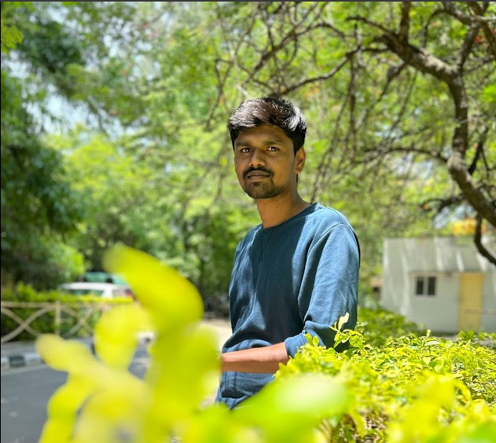

Raanasukumar Muthyam
Senior Engineer, Solutions Automation and Test
Email: rsk.muthyam@gmail.com | Phone: +91 949 325 9772

Summary
- Experience in manual testing of ONU, CPE devices, with a good understanding of GPON, VLAN, IGMP, ARP protocols.
- Proficient in automation using Python, TCL, Robot Framework, with better exposure to DevOps.
- Skilled in infrastructure management with hypervisors and security vulnerability analysis.
Skills
- Scripting Languages: Python, Robot Framework, Groovy, TCL
- Operating Systems: Linux (Debian, RedHat, Kali), Windows
- Cloud: AWS, GCP
- DevOps & Tools: Git, Jenkins, JFrog, Nexus Artifactory, Bitbucket, Bamboo
- Hypervisors: Proxmox, VMware ESXi, VirtualBox
- Protocols: VLAN, ARP, DHCP, GPON, ICMP, IGMP, OAM, Lawful Intercept, Netconf, Restconf, QoS, IPFIX
- Security Tools: Nessus, Nmap
- Products Worked On: Huawei OLT, Nokia OLT, Total Access 5000 OLT (ADTRAN), Spirent, Extreme Switches, Digi Servers, Dell ESXi, Super Micro, Residential ONTs, DPUs
- Test & Collaboration Tools: Spirent TestCenter, Wireshark, Jira, Jira API, HP Quality Center, Ixia, Confluence/WikiSpace, Spirent Velocity
Experience
Software Engineer at ADTRAN Networks (Jan 2019 – Nov 2021)
- Set up functional and non-functional testbeds.
- Conducted manual testing of DPU, ONT, and CPE devices.
- Automated manual scenarios using Robot Framework and Python.
- Developed Jenkins pipelines with Groovy and Python virtual environments.
- Maintained virtualization infrastructure with Proxmox and VMware ESXi.
- Analyzed security vulnerabilities using Nessus and Nmap.
Network Engineer and Test Professional at OPENREACH (Nov 2021 – Mar 2023)
- Conducted network integration and conformance tests.
- Resolved real-time field issues in live networks.
- Automated test cases using TCL, Python, and Robot Framework.
- Worked with DevOps tools such as GitLab, Nexus, SonarQube IQ, and Jenkins.
Engineer, Solutions Automation at CALIX (Mar 2023 – Present)
- Automated tools and utilities using Python.
- Developed test plans and automated testing in Robot Framework and Python.
- Integrated automation processes with Bamboo, Bitbucket, Jenkins, and Sonatype Nexus.
- Automated cloud-based applications using Restconf and Selenium.
Educational Background
- B.Tech in Information Technology, VNR Vignana Jyothi Institute, Hyderabad, 2019, 74%.
- Diploma in Metallurgical Engineering, Government Polytechnic College, Kothagudem, 2015, 77%.
- SSC, Board of Secondary Education, Telangana, 2012, 87%.
Achievements and Certifications
- Developed an educational blog used by multiple institutions.
- Cisco Certified Entry Network Technician (CCENT).
- Certified Ethical Hacker (Basic) by Linux Academy.
- Linux Professional Institute Certificate II by Linux Academy.
- Received accolades for CI/CD architecture optimization at ADTRAN.